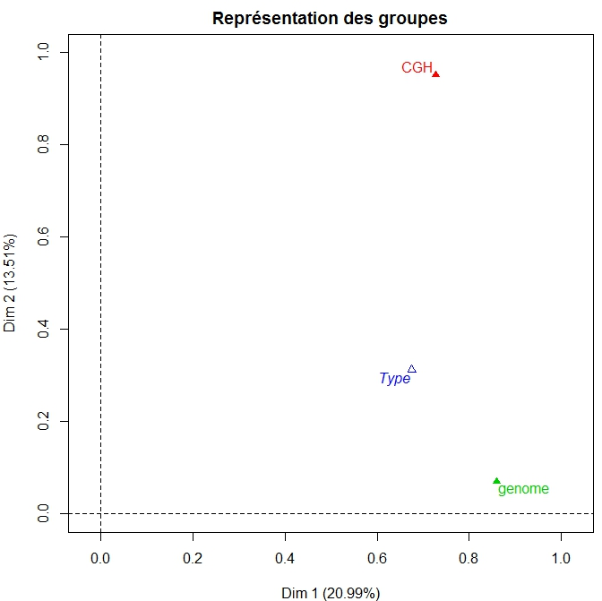
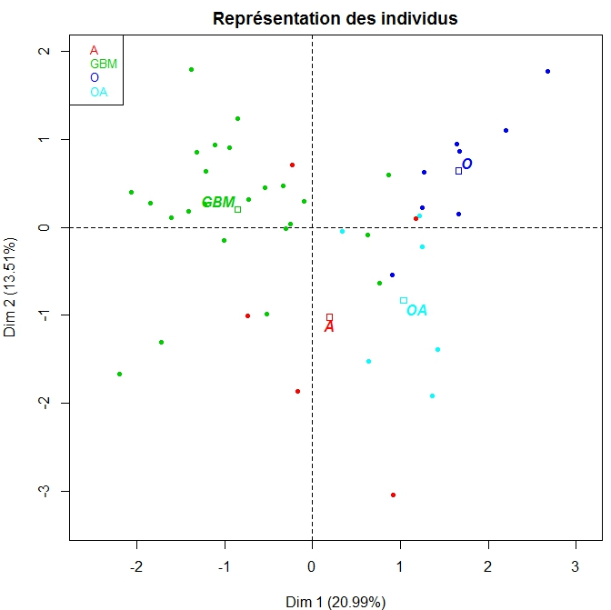
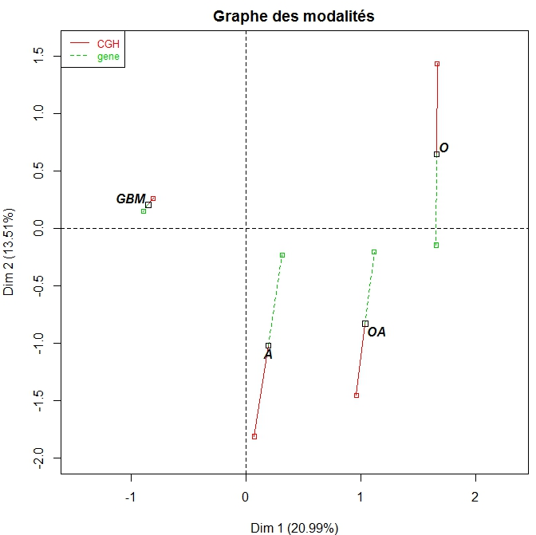
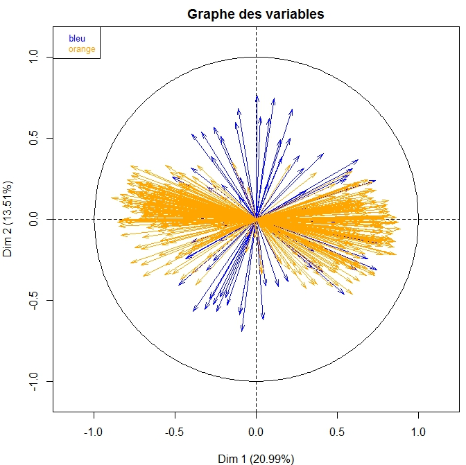
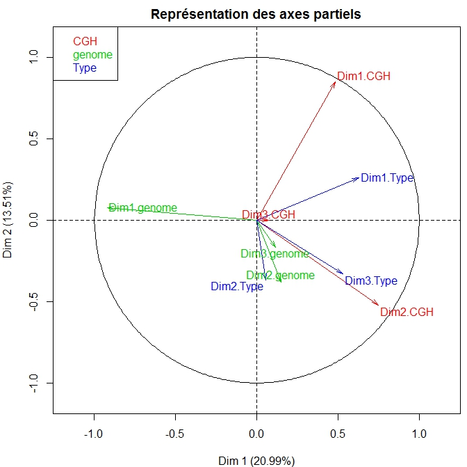
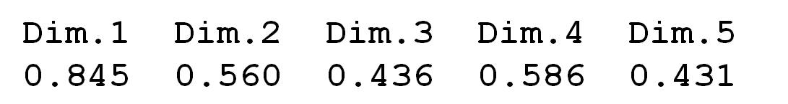
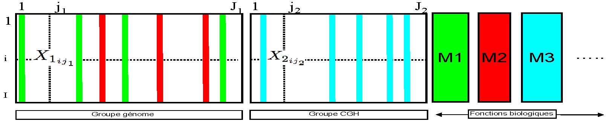
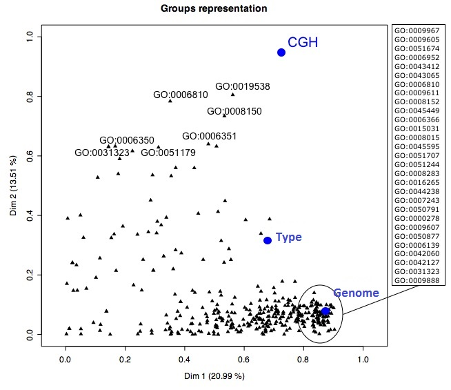

Site F. Husson
IntroductionAnalyse en Composantes PrincipalesAnalyse des correspondances Analyse des correspondances multiples ClassificationAnalyse Factorielle MultiplePour conclureForum
Quarante-cinq patients atteints d'une tumeur au cerveau sont classés selon le type de tumeur dont ils sont atteints : oligodendrogliome (O), astrocytome (A), mixed oligo-astrocytome (OA) et glioblastome (GBM), ce dernier étant le cancer de grade le plus élevé. Chaque tumeur a été analysée à deux niveaux différents : au niveau du génome (génome) et au niveau du transcriptome (CGH). Nous ne détaillons pas ici comment sont réalisées ces deux analyses du point de vue biologique car cela est assez complexe et ce n'est pas utile pour répondre aux questions de l'exercice. Le tableau correspondant aux mesures sur le génome contient 356 variables tandis que le tableau CGH en contient 68. La variable qualitative correspondant au type de tumeur est également notée. On construit l'AFM en mettant en actif le groupe de 356 variables sur le génome et le groupe de 68 variables sur CGH. La variable correspondant au type de tumeur est mise seule dans un groupe supplémentaire.
Q1) Les 3 premières valeurs propres du groupe CGH sont 13, 11, 6 tandis que les 3 premières valeurs propres du groupe génome sont 163, 36, 22. Un des groupes a un Lg de 2.506 tandis que l'autre groupe a un Lg de 1.098. Quel groupe a un Lg de 2.506 ? le groupe CGH le groupe génome
Q2) On donne le graphe des groupes de l'AFM.  A partir de ce graphe, on peut dire que les deux groupes de variables différencient les individus exactement de la même façon les deux premières dimensions de l'AFM sont présentes dans le groupe CGH les deux premières dimensions de l'AFM sont présentes dans le groupe génome le groupe génome ne peut avoir qu'une seule dimension et ne peut pas être lié à la dimension 3 de l'AFM
Q3) On donne le graphe des individus de l'AFM.  A partir du graphe des individus et du graphe des groupes, on peut dire que le groupe génome permet de différencier les individus qui ont une tumeur de type GBM, comme le fait la 1ère dimension de l'AFM le groupe CGH permet de différencier les individus qui ont une tumeur de type GBM, comme le fait la 1ère dimension de l'AFM le groupe génome permet de différencier les individus qui ont une tumeur de type A ou OA des autres individus, comme le fait la 2ème dimension de l'AFM le groupe CGH permet de différencier les individus ayant une tumeur de type A ou OA des autres individus, comme le fait la 2ème dimension de l'AFM
Q4)On donne le graphe des modalités (i.e. des types de tumeur) avec leurs points partiels.  A partir de ce graphe et en considérant que la projection sur le plan représente bien les différences dans l'espace, on peut dire que le type de tumeur GBM est décrit de façon très homogène par les 2 groupes de variables le type de tumeur O est décrit de façon très homogène par les 2 groupes de variables les types de tumeur O et OA sont mieux différenciés par les données du groupe CGH que du groupe génome
Q5)On donne le graphe des variables.  les variables du groupe orange correspondent aux variables du groupe CGH les variables du groupe bleu correspondent aux variables du groupe CGH
Q6) A partir du graphe des variables et du graphe des individus, on peut dire que les individus ayant une tumeur de type GBM prennent de fortes valeurs pour les gènes qui sont projetés sur la gauche du graphe les individus ayant une tumeur de type GBM prennent de faibles valeurs pour les gènes qui sont projetés sur la droite du graphe les individus ayant une tumeur de type GBM prennent de faibles valeurs pour les gènes qui sont projetés sur la gauche du graphe
Q7)On donne le graphe des axes partiels avec la projection des 3 premières dimensions de chaque groupe.  A partir de ce graphe, on peut dire la première dimension du groupe génome est très liée (négativement) à la première dimension de l'AFM la première dimension du groupe CGH est très liée à la première dimension de l'AFM le graphe des individus de l'ACP sur les données du groupe CGH n'a aucune structure commune avec la configuration moyenne des points de l'AFM le graphe des individus de l'ACP sur les données du groupe CGH a une structure commune proche de la configuration moyenne des points de l'AFM (mais à une rotation près)
Q8) On donne, dimension par dimension, le ratio de l'inertie inter sur l'inertie totale des points partiels.  A partir de ces ratios, on peut dire que chaque individu a ses coordonnées partielles (relativement) proches de sa coordonnée moyenne sur la première dimension la moitié des individus a ses coordonnées partielles proches de sa coordonnée moyenne sur la 2ème dimension pour la dimension 3, certains individus ont leurs coordonnées partielles relativement éloignées
Q9)Une information supplémentaire peut être apportée ici : elle concerne les fonctions biologiques dans lesquelles les gènes sont impliqués. Une fonction biologique peut être vue comme un groupe de gènes (i.e. un groupe de variables). Un même gène peut appartenir à différentes fonctions biologiques. On considère chaque fonction biologique comme un groupe de variables supplémentaire. On reprend donc le tableau précédent auquel on ajoute les gènes impliqués dans chaque fonction biologique (voir le tableau ci-dessous).  Chaque fonction biologique est un groupe de variables qui sera pris comme élément supplémentaire dans l'AFM (ceci évite qu'un gène impliqué dans une fonction contribue plusieurs fois à la construction des dimensions de l'AFM). Les fonctions biologiques qui ont une coordonnée élevée sur la dimension 1 sont constituées exclusivement de variables corrélées positivement à la 1ère dimension de l'AFM exclusivement de variables corrélées négativement à la 1ère dimension de l'AFM exclusivement de variables corrélées positivement ou négativement à la 1ère dimension de l'AFM de variables corrélées positivement ou négativement à la 1ère dimension de l'AFM
Q10) Au niveau de l'interprétation,  de nombreuses fonctions biologiques ont une forte coordonnée sur l'axe 1, ce qui signifie que de nombreuses fonctions sont atteintes pour les GBM par rapport aux autres types de tumeurs on peut trier les fonctions selon leur coordonnée sur le deuxième axe, permettant ainsi de savoir quelles sont les fonctions qui sont différemment touchées entre les types de tumeurs O et OA
Score = Réponses correctes :